- Role
- Product Designer
- Scope
- Design system, foundations to components
- Timeline
- 2 to 3 months
- Platform
- Responsive web, built on Figma variables
An outdated product, with nothing underneath holding it together
EC Affiliates is a name changed here for confidentiality. Its interface was outdated, and there was no system underneath holding it together.
Every screen was assembled by hand, so the same button, table row and input existed in slightly different versions. Engineers had to interpret each screen on its own, and every inconsistency became a question, and often rework. The goal was a consistent design language first, and a new interface built inside it.
Stay neutral, build accessibility in, and make it easy to maintain
Deliberately neutral
The company wanted the option to white label the product later, so the system couldn’t depend on one brand’s personality. It had to be clean, direct and quiet enough for another brand to move in.
Without a brand to lean on, clarity had to come from structure: consistent spacing, contrast that holds across palettes, and components that behave the same whatever colors they use.
Accessibility, built in
I checked the interface against WCAG as I designed it, rather than auditing it afterwards.
Every color family is a full tonal ramp, so contrast is settled once by which steps sit together. On a dashboard people read numbers off, legibility is the difference between the product working and not.
Made to be maintained
I organised the file to be added to rather than admired.
Every decision has one page to change it on. Tokens are named as scales (shadow-md to shadow-3xl, numbered color steps), so they survive a rebrand, and with color held as variables a new theme is a single edit.
Foundations, two themes, components, and screens built from them
Foundations
Color, type, icons, spacing, shadows, grids and radius, each its own page in the file, and each a decision made once instead of on every screen.
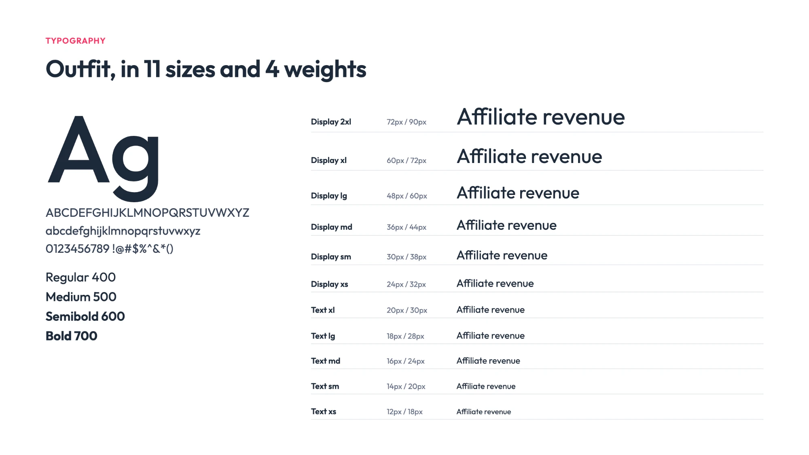
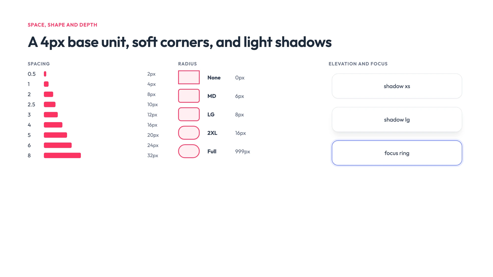
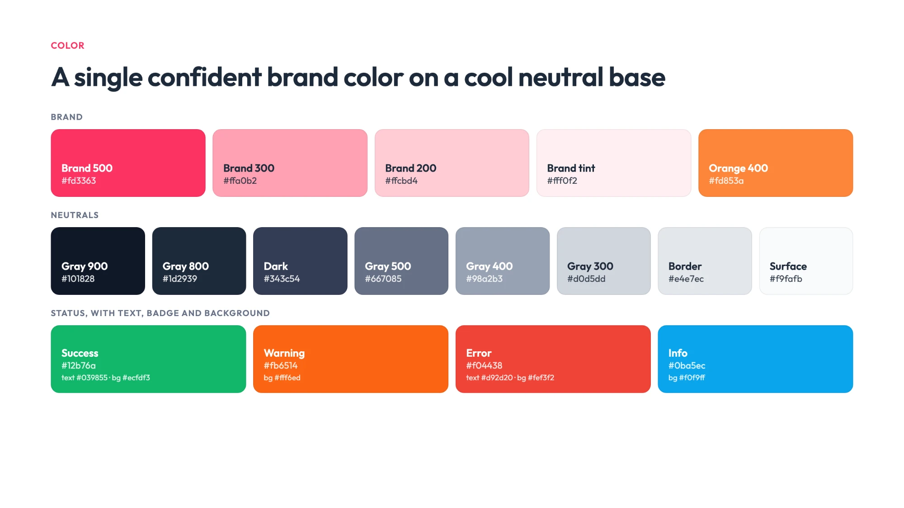
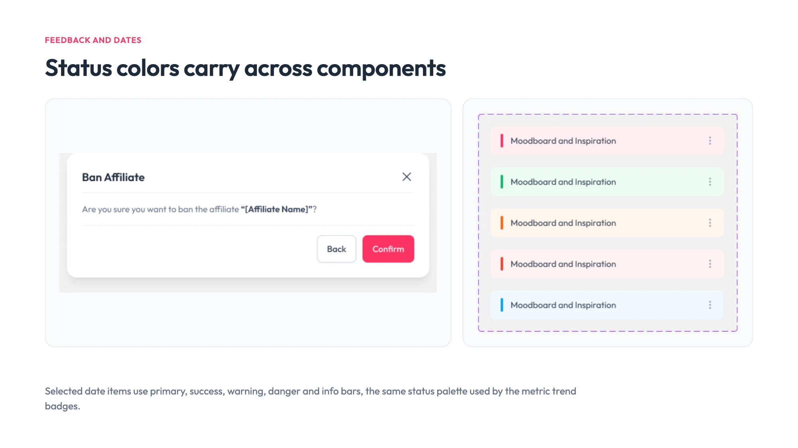
Typography
Outfit, in eleven sizes and four weights, from Display 2xl at 72px to Text xs at 12px, each with its own line height.
Space, shape and depth
A 4px base unit for every gap, corners from None to Full, and two soft shadows with a focus ring for depth.
Color
One brand color on a cool neutral base, and four status colors, each with a matching background tint.
Status colors
The same status palette runs through dialogs, date items and the metric trend badges.
One set of variables, two themes
Every color is a variable, and light and dark are two modes of the same set.
A screen is designed once, and the variables decide which theme it renders in. Each is named for its job rather than its color (Title Color, Border Secondary, Background Modal) and grouped by what uses it, so one edit reaches everywhere that family appears.
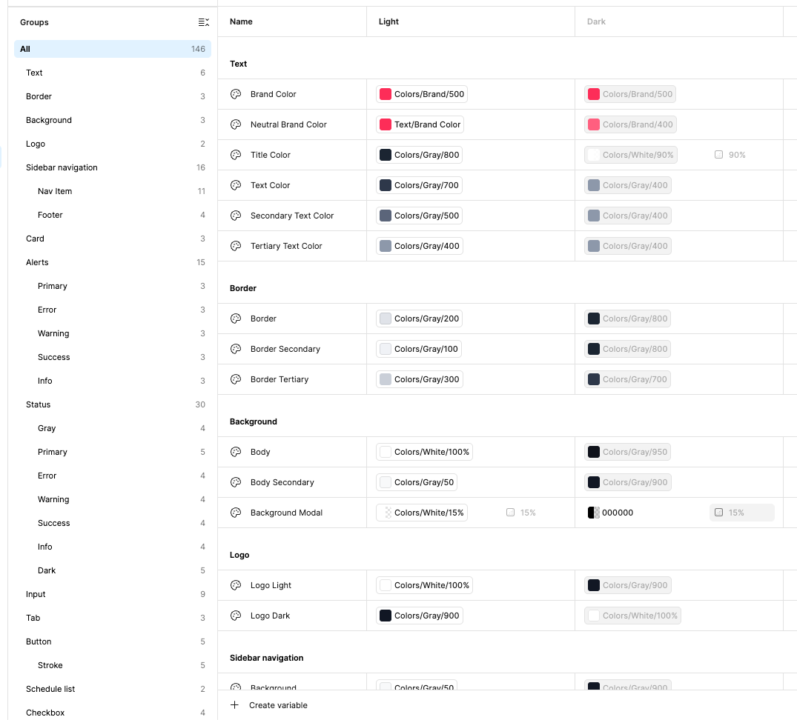
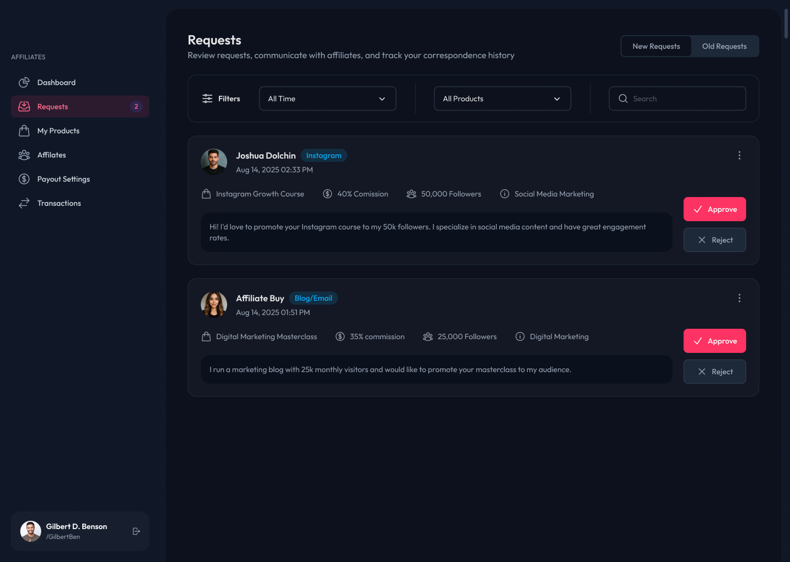
Light DarkComponents
I designed the components to cover the product's future cases as well as the screens that existed on the day.
Everything was fully responsive, and I specified interactions like drag and drop in the component rather than leaving them for engineering to interpret.
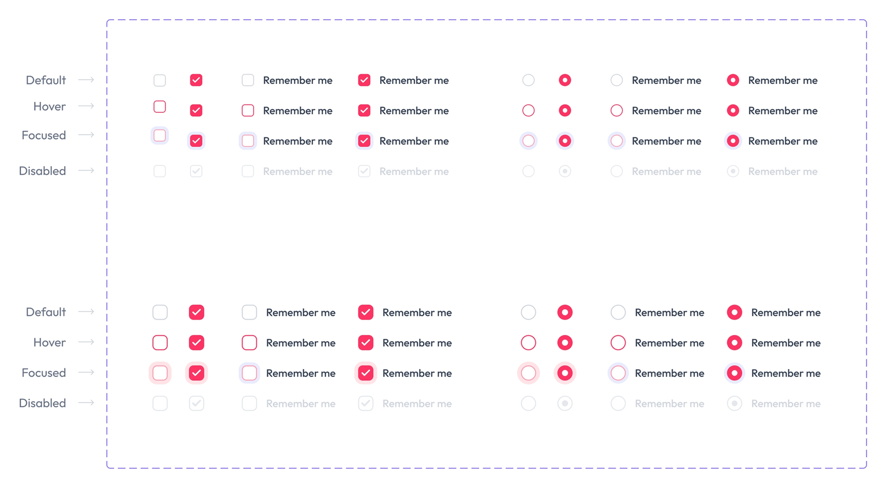
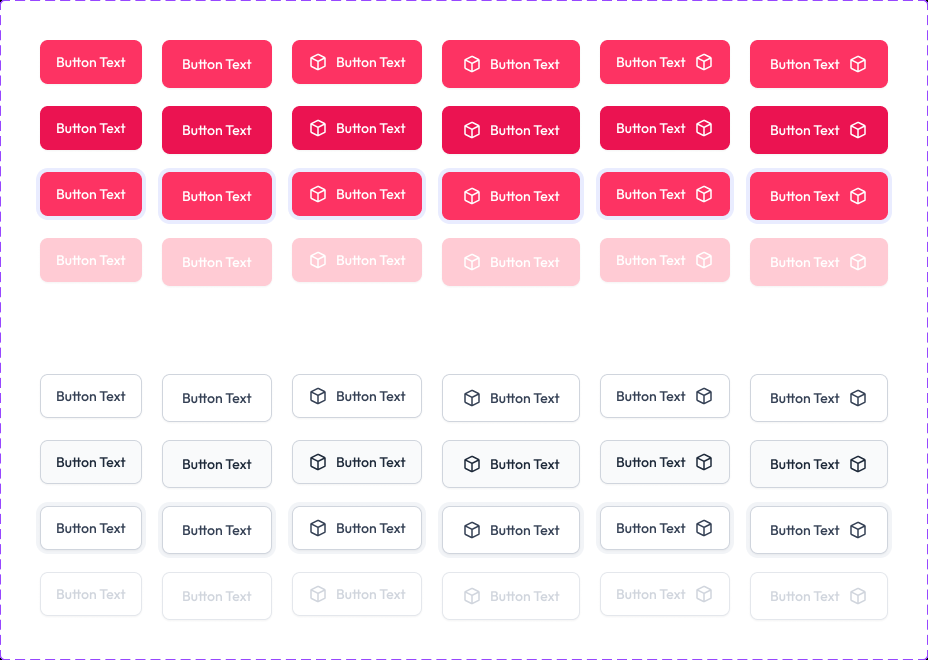
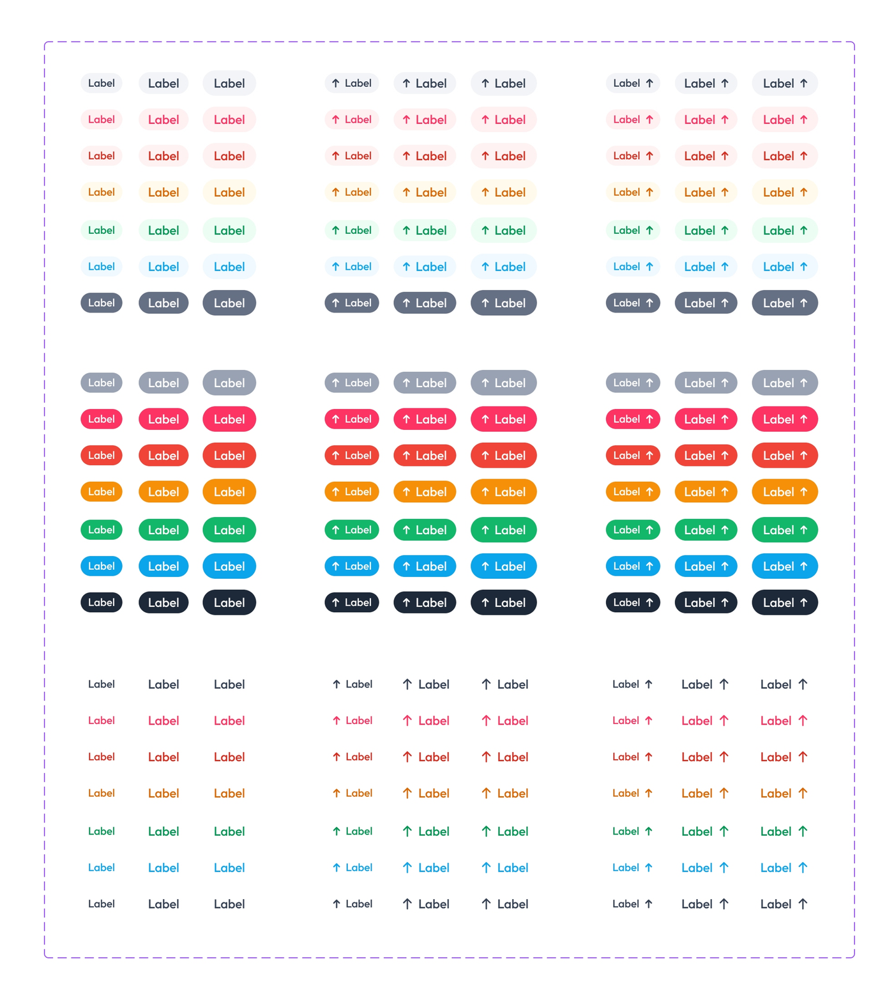
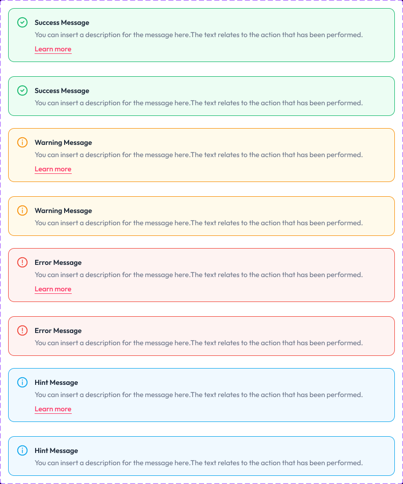
States
Checkboxes and radios in default, hover, focused and disabled, at both sizes. Focus is part of the component, not a note for later.
Buttons
Filled and outlined, at three sizes, with or without an icon, each in every state.
Badges
One badge in every color family, at three sizes. The ramp does the work, so the badge itself never changes.
Alerts
Success, warning, error and hint. An icon and a word carry the state as well as color, so it reads without telling green from red.
The system in use
Screens assembled from the library rather than drawn beside it.
Stat cards, toggles, selects, tags, approve and reject buttons: every piece is a library component. The green change indicators are the success badge, so they agree with every other badge in the product.
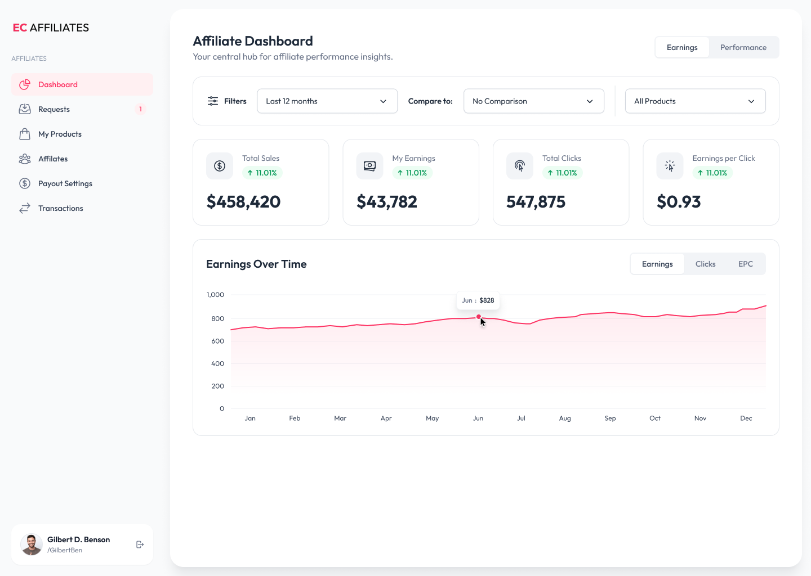
It shipped, and outlived the product it was built for
It was approved, implemented and ran live for several months. When the company pivoted, several of its ideas were carried straight into the new product’s design system. The engineers said the library helped most: building a new screen became assembly rather than reinvention. The client called the interface clean enough that nothing competed with the data, and the change night and day.
Have a company worth skyrocketing?
I'm open to full-time roles and looking to join a team where I can bring a decade of product design and make a meaningful impact. If you're hiring, I'd love to hear about what you're building.